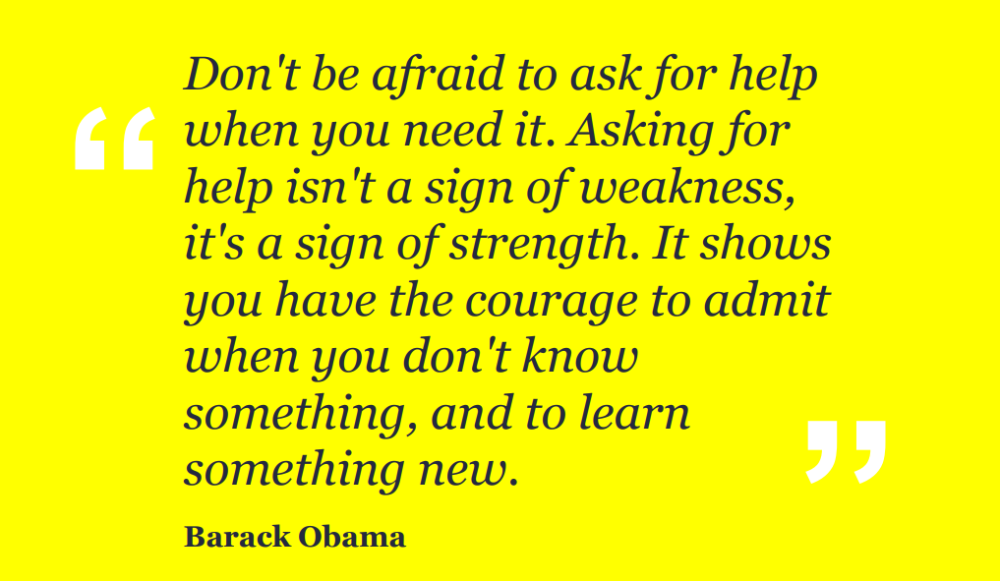

Welcome To My Profile
Hay I'm Fell I'll Be A full Stuck Progremmer
& Digital Marketing Performance
3 My Favorit Film
joko tingkir
hebat dan kuat
Naruto
Hebat dan kuat
Wanglin
Ini Ulang Tahunku
2002 April 05

apa aja yang harus di bawa
- makanan
- minuman
- ulang
My contact
contact